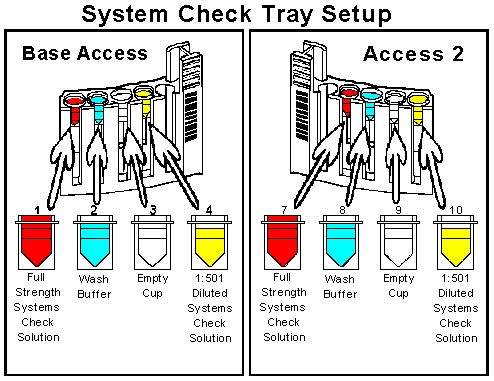

Tests: System Check
-
Preparation
Note: To run the System Check test, the waste bag will require space for 35 RVs, plus 3 spaces for end of run clean, and 1 space for each row of RVs onboard at the start of the run, plus 2. Insufficient space will result in a supply wait for Access and cancelled "SYS" flagged samples for Access 2.
-
Prepare a 1:501 dilution of System Check solution by mixing 20 ul System Check with 10 ml of wash buffer.
Note: Do not use HS System Check solution for the System Check test.
- Place empty 2 ml sample cups in the sample tray positions as shown in the next section.
- Place 2 ml of the appropriate solution into the sample cups as shown in the next section. Fill to the top but do not overfill the cups.
-
Prepare a 1:501 dilution of System Check solution by mixing 20 ul System Check with 10 ml of wash buffer.
-
Sample loading
-
For a complete System Check fill the 2 ml sample cups as shown in the diagram below.
Note:
- The sample cups are loaded in different locations for Access Base and Access 2.
- Access 2 requires the "empty cup" to be loaded onto the tray.
-
If running an individual portion of the System Check, then only load the cup needed for that test.
Washed only: Position 1 (Access) or 7 (Access 2), System Check.Clean only: Not an individual test, no cup.Substrate only: Position 1 (Access) or 9 (Access 2), Empty cup.Unwashed only: Position 1 (Access) or 10 (Access 2), 1:501 solution.

-
For a complete System Check fill the 2 ml sample cups as shown in the diagram below.
-
Load tray and run on Access 2
Caution: Do not press Cancel during an in progress System Check procedure unless absolutely necessary. Canceling an in progress System Check could leave RVs in the wash carousel and cause the instrument to jam during a future run. If the test has been cancelled, then prior to beginning another test, check the wash carousel for orphan RVs. Remove any RVs found through the clean-out hole under the wash arm.
- Navigate to the Sample Manager screen.
- Enter the Rack number into the Rack ID box at the center of the screen and press [Enter].
- Select [F4] Maintenance.
-
In the Maintenance menu Check [X] the System Check box and then select the test to be run. (All, Washed, Unwashed, or Substrate).
Note: The default is 10 repetitions. For more reps select a service assay.
- Select [F1] OK
- For reference, the maintenance request screen will display the rack locations where sample cups are required for the test selected.
- Press [F1] Load Rack.
- Mount the Rack on the Sample Carousel and Press [F1] Done.
- Press "Run" to begin the test. The complete System Check requires 40 minutes to complete.
-
Load tray and run on Access 2 as service assay
- Navigate to the Sample Manager screen.
- Enter the Rack number into the Rack ID box at the center of the screen and press [Enter].
- Select [F3] Test Request, [F8] More Options, [F3] Request Service Assay.
- Enter a Service Sample ID (xxx) and then [F1] OK.
- Select [F3] Show Test Menu to display the service assay test menu.
- Select a test (Washed [LumWash 906], Unwashed [Lumi-AP 907], or Substrate [LumBlank 905]). Use the "+" key to add more repetitions.
- Place sample cups in the requested rack locations.
- Fill the cups with the sample fluid appropriate to the tests requested.
- Press [F1] Load Rack.
- Mount the rack on the sample carousel and Press [F1] Done.
- Press "Run" to begin the test.
-
Verification
- Review the test printout.
- Verify that all CVs, means, ranges and the Substrate Ratio are within specifications.
- Troubleshoot if any test does not meet specifications. Refer to the "System Check Troubleshooting" procedure ().